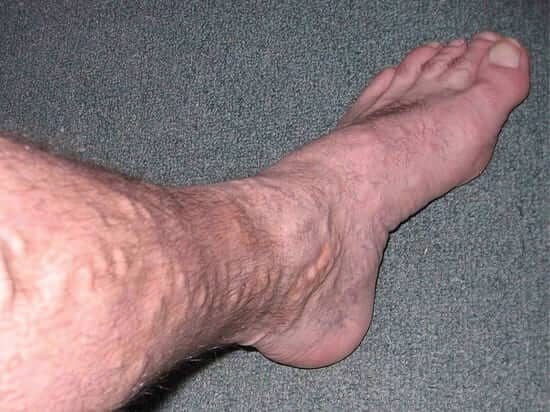
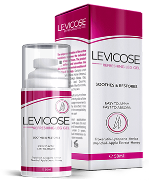

Μέθοδος για τη θεραπεία των κιρσών χωρίς χειρουργική επέμβαση και λαϊκές θεραπείες
Η φλεβίτιδα με τσάκισε, η φλεβίτιδα! Πάντα πίστευα ότι μόνο οι γυναίκες πάσχουν από αυτήν την ασθένεια. Πάλευα με όλους τους πιθανούς και απίθανους για έναν απλό άνθρωπο τρόπους μέχρι και εγχείρησή έκανα. Αλλά από την φλεβίτιδα με έσωσε κάτι άλλο, για το οποίο θα σας μιλήσω σε λίγο.
Εγώ και η φλεβίτιδα
Όλη μου τη ζωή, όσο βέβαια με κρατούσαν τα πόδια μου, δούλευα σαν το σκυλί. Στα 40 κατάφερα να έχω ένα μεταχειρισμένο αμάξι, μια γκαρσονιέρα και κήλη.... Ύστερα αποφάσισα να ανέβω λίγο στην λίστα των πιο πλούσιων ανθρώπων στην γη και άρχισα δική μου δουλειά, κάνοντας ανακαινίσεις σε σπίτια. Η δουλίτσα πήγαινε μια χαρά, μέχρι που άρχισαν τα προβλήματα με τα πόδια μου.
Άρχισαν να πρήζονται, να κουράζονται μόλις σε μερικές ώρες δουλειάς και τις νύχτες να με πιάνει ένα τρέμουλο λες και με χτύπησαν 220 βολτ. Άρχισαν να προεξέχουν οι φλέβες και να δημιουργούνται τα λεγόμενα 'αστεράκια'. Την απάντηση στη ερώτηση “τι είναι αυτό;” μου την έδωσε το ίντερνετ – φλεβίτιδα. Αλλά άντε βγάλε άκρη, τι πρέπει να κάνεις. Άλλοι γράφουν τρέξτε επειγόντως στον γιατρό, από την άλλης αυτοί που πήγαν στον γιατρό, ισχυρίζονται ότι η θεραπεία δεν βοηθάει. Τελικά επέλεξα τις λαϊκές θεραπείες.
Θεραπεία από το σπίτι
Σαν αφελής χάλασα όλο το μέλι που είχαμε στο σπίτι . Τι έκανα; Το έβαζα σε ένα πανί και τύλιγα τα πόδια μου για μερικές ώρες. Τζάμπα ο κόπος των μελισσών– αποτέλεσμα μηδέν. Μετά στράφηκα στα λάχανα.
Η βασική αρχή της θεραπείας έμοιαζε με την προηγούμενη, έπρεπε να τυλίγετε τα πόδια σας με φύλλα από λαχανα. Πρέπει να είμαι πολύ χαζός αφού τα πίστεψα όλα αυτά. Τέλος πάντως ας πάει και το παλίαμπελο. Δεν μπορούσα να κάθομαι με σταυρωμένα τα χέρια, είχα προβλήματα με την δουλειά λόγω αυτής της καταραμένης φλεβίτιδας, οι πελάτες μου με πίεζαν.
Συνειδητοποιώντας ότι το λάχανο δεν κάνει τίποτα, άρχισα να κάθομαι στην μπανιέρα, προσθέτοντας μερικές σταγόνες αιθέριο έλαιο. Ούτε που θυμάμαι πως βρέθηκε στο σπίτι, μάλλον ο ίδιος ο Θεός από τον ουρανό μου το στείλε. Και κάπου αλλού στο φόρουμ διάβασα ότι φλεβίτιδα φοβάται το λεμόνι όπως ο διάολος το λιβάνι. Λίγα λεπτά αργότερα, αγόρασα ότι λεμόνι υπήρχε στο πλησιέστερο κατάστημα, το οποίο βέβαια στη συνέχεια είχε την ίδια μοίρα με το λάχανο.
Μετά από σχεδόν ΔΥΟ ΜΗΝΕΣ κακοποίησης προϊόντων, συνειδητοποίησα ότι η κατάσταση δεν έγινε καλύτερη, αλλά μάλλον χειρότερη. Αναγκάστηκα να ακυρώσω όλες τις παραγγελίες στη δουλειά, τελειώνοντας με τα χίλια ζόρια μία που είχα και προσωρινά να κατεβάσω ρολά. Έπρεπε επειγόντως να κάνω κάτι με τα πόδια μου.
Το πρώτο πράγμα που με τρόμαξε όταν κοίταξα τα πόδια μου ήταν οι φλέβες που ξεπετάχτηκαν σαν ζιζάνια. Το δεύτερο ήταν κάτι σκοτεινές κηλίδες που δεν είχα ξαναδεί. Απορρίπτοντας όλες τις προκαταλήψεις στο φόρουμ ότι οι γιατροί δεν βοηθούν, έσυρα το κορμί μου στο νοσοκομείο.


Θεραπεύτηκα, σχεδόν
Η κοπέλα στην γραμματεία με έστειλε στο φλεβολόγο, που με εξέτασε και ήταν σοκαρισμένος με αυτά που έβλεπαν τα μάτια του. Ύστερα με προειδοποίησε τι με περιμένει στο μέλλον εάν δεν κάνω επειγόντως εγχείρηση στα πόδια μου - θρόμβωση, που μπορεί με την σειρά της να οδηγήσει σε διαταραχή στην παροχή αίματος στον εγκέφαλο ή στην καρδιά και να αποτελέσει απειλή για τη ζωή μου, ενώ το πιο ακίνδυνο πράγμα που μπορεί να συμβεί είναι έλκη στα πόδια
Για να μην πεθάνω ξαφνικά από κιρσούς, συμφώνησα να κάνω την επέμβαση, πριν από την οποία έπρεπε να υποβληθώ σε εξετάσεις. Σύντομα έμαθα ότι κάνω για εγχείρηση και ορίστηκε ημερομηνία όταν θα πήγαινα σαν πρόβατο επί σφαγή.
Φυσικά, αστειεύομαι, η εγχείρησή ήταν σχεδόν ανώδυνη, έγινε υπό αναισθησία, αλλά η περίοδος αποκατάστασης είναι χειρότερη από την ίδια την επέμβαση.

Για ένα μήνα καθόμουν χωρίς δουλειά με ξυρισμένα πόδια, έπινα τα χάπια που ο γιατρός μου έγραψε και φορούσαν πλεκτά εσώρουχα συμπίεσης - κάλτσες, που ήταν σχεδόν σαν καλσόν, Έπρεπε επίσης να επισκέπτομαι τακτικά τον γιατρό, που έλεγχε αν όλα πάνε κατ ευχήν. Μετά το πέρας της περιόδου αποκατάστασης ο γιατρός με βομβάρδισε στην κυριολεξία με ένα σωρό συστάσεις και απαγορεύσεις
Γεια σου, φλεβίτιδα
Και τελικά επιτέλους επέστρεψα στη δουλειά. Δεν ένιωθα πόνο, απλά μερικές φορές υπήρχαν κάτι παράξενες ενοχλήσεις στα πόδια μου, κάτι που βέβαια δεν είναι καθόλου περίεργο, στην τελική για εγχείρηση μιλάμε. Περνάνε που λέτε 1-2 μήνες που άρχισα κανονικά να δουλεύω και τσουπ νάτο πάλι το βάρος στα πόδια. Δεν ξαναδοκίμασα αυτό με τα λάχανα και τα μέλια, έτρεξα αμέσως στον γιατρό.
Το προβληματισμένο βλέμμα του γιατρού με προβλημάτισε και μένα, με ρώτησε αν ακολουθούσα τις συστάσεις του, μου έγραψε αρκετά φάρμακα και πρότεινε μια εγχείρηση με λέιζερ, πιο σύγχρονη από την προηγούμενη. Είχα αρκετές ερωτήσεις: γιατί δεν την κάναμε εξαρχής αυτήν την επέμβαση, αυτή τη φορά θα βοηθήσει σίγουρα;
Θυμήθηκα αμέσως τα λόγια των ανθρώπων στο φόρουμ, όλα αυτά που έσουραν στους ιατρούς. Εν ολίγοις, αποφάσισα να αναζητήσω μια άλλη μέθοδο θεραπείας
Χείρα βοηθείας
Στεκόμενος με το ζόρι στα πόδια μου, συνέχισα να εργάζομαι, έπρεπε άλλωστε να θρέψω κάπως τον εαυτό μου, αγόρασα τα φάρμακα που μου έγραψε ο γιατρός, δεν υπήρχε καμία λογική σε αυτά, αλλά είχαν κάποιο μαγικό τρόπο να σε καθησυχάζουν.
Μια μέρα χτυπάει το τηλέφωνο, το σηκώνω , στην άλλη άκρη της γραμμής είναι μια γυναίκα. Παραγγελία, ανακαίνιση στην κρεβατοκάμαρα. ήρθα σπίτι της, συζητήσαμε τις λεπτομέρειες αγόρασα τα υλικά και άρχισα να δουλεύω. Τα πόδια μου πονούσαν όπως ποτέ πριν αλλά χρειαζόμουν τα χρήματα για να ζήσω κάπως.
Δούλευα κάνοντας συχνά διαλείμματα, κατά τη διάρκεια των οποίων η γυναίκα μου έφτιαχνε τσάι και καθόταν μαζί μου στο τραπέζι και μιλάμε για την ζωή γενικά. Σε μια στιγμή μου λέει ότι παλιά ταλαιπωρούταν και αυτή με την φλεβίτιδα πριν κάνει θεραπεία με το . Άκουγα προσεκτικά, κρεμόμουν από τα χείλη της, βρήκα πού μπορώ να το παραγγείλω και όταν γύρισα σπίτι παράγγειλα μια συσκευασία.
Μετά από λίγες μέρες έλαβα το δέμα με το , διάολε ακόμα και η ίδια η συσκευασία μαρτυρούσε ότι το πρόβλημα αφορούσε τις γυναίκες, αλλά όπως λένε, στον πόλεμο όλα τα μέσα είναι θεμιτά, έτσι διάβασα τις οδηγίες και ξεκίνησα την θεραπεία
Απίστευτο
Απίστευτο, μετά από λίγες μέρες έγινε πιο εύκολο για μένα να δουλέψω! Μοιραζόμουν την πρόοδο στην υγεία μου με την ίδια γυναίκα που μου απαντούσε συνεχώς: Δεν σου λεγα εγώ ότι βοηθάει το φάρμακο. Όλα τα φάρμακα που συνταγογραφήθηκαν από τον γιατρό σταμάτησαν να μου φέρνουν ηρεμία και κατέληξαν στον κάδο σκουπιδιών.
Ο πόνος στα πόδια μου έφυγε μετά από μια εβδομάδα, αλλά μου ήταν δύσκολο να στέκομαι όρθιος για πολύ ώρα, έστω και έτσι είπα από μέσα μου, αλλά όλη η θεραπεία ήταν ακόμα μπροστά
Τελείωσα την ανακαίνιση στο σπίτι της γυναίκας, νιώθοντας πια απόλυτα υγιής, την ευχαρίστησα απο τα βάθη της καρδιάς μου, πήρα λιγότερα χρήματα για την δουλειά και πήγα σε άλλη.
Εκεί οι απαιτήσεις ήταν μεγαλύτερες, έπρεπε να κατεδαφίσουμε μερικούς τοίχους και να φτιάξουμε καινούργιους. Έτρεχα σαν τον Βέγγο για δύο εβδομάδες χωρίς ρεπό και θέλω να σημειώσω ότι τα πόδια μου δεν πονούσαν καθόλου, ήταν κουρασμένα μεν, αλλά όχι σαν κάποιου που πάσχει από φλεβίτιδα. Όλα έγιναν όπως πριν. Δουλεύω και στέκομαι γερά στα πόδια μου
Οι ευρυαγγείες έφυγαν από τα πόδια μου, δεν είχαν μείνει σχεδόν καθόλου, μετά την θεραπεία θα σύγκρινα τα πόδια μου με εκείνα που δείχνουν στα περιοδικά. Μετά από αρκετούς μήνες σκληρής και κοπιαστικής εργασίας, μπορώ να πω ότι η φλεβίτιδα καταπολεμήθηκε. Δεν επέστρεψε όπως μετά από την χειρουργική επέμβαση.

Αγαπητοί άνδρες και γυναίκες που πάσχετε από φλεβίτιδα, είστε απίστευτα τυχεροί που διαβάσατε την ιστορία μου. Εδώ υπάρχει λινκ για το φάρμακο
9874 like, 7561 replies

Μαρία Παπαδοπούλου
Δημοσιεύθηκε
Ο σύζυγός μου έκανε κομπρέσες με πατάτες, λέει ότι τον βοηθά λίγο. Αλλά δεν βλέπω κανένα αποτέλεσμα, οι φλέβες εξακολουθούν να διογκώνονται. Θα τον παραγγείλω το , ευχαριστώ για την ιστορία)
Βασιλική Παπαμιχαήλ
Δημοσιεύθηκε
Δεν είναι σπάνια περίπτωση που μετά από χειρουργική επέμβαση, εμφανίζονται και πάλι οι κιρσώδεις φλέβες. Μοιάζει και η δική μου ιστορία με αυτήν, απλά εγώ έκανα επέμβαση με λέιζερ. Το αποτέλεσμα κράτησε για έξι μήνες, τώρα ξανά τα ίδια, δεν ξέρω τι να κάνω. Όλες τις ελπίδες μου τις εναποθέτω στο (
Μυρτώ Παπαδοπούλου
Δημοσιεύθηκε
Συνάντησα πρόσφατα μια παλιά μου φίλη. Μιλήσαμε. Μου είπε ότι παραλίγο να πεθάνει το καλοκαίρι. Πριν από 2 χρόνια, πραγματοποίησε μια επέμβαση στις φλέβες των ποδιών. Ήταν ευχαριστημένη. Πήγε με τα παιδιά της στο εξοχικό της, έπαιζε ποδόσφαιρο μαζί τους και σε κάποια στιγμή έσκασε η φλέβα της. Με το ζόρι πρόλαβε να φτάσει στο νοσοκομείο. Την είχαν συμβουλεύσει να αποφεύγει τις επεμβάσεις. Μετά από αυτές, υπάρχουν πολλοί περιορισμοί
Κατερίνα Κυριακοπούλου
Δημοσιεύθηκε
Φρίκη…
Βασιλική Παπαδογιάννη
Δημοσιεύθηκε
Θεράπευσα την φλεβίτιδα με , ένα φάρμακο που δοκιμάστηκε στη θεία μου) Η γέλη ανακούφισε από τον πόνο, και έβαλε τέλος στις διογκωμένες φλέβες και τις ευρυαγγείες
Μιχάλης Παναγιωτόπουλος
Δημοσιεύθηκε
Όταν ήρθα αντιμέτωπος με κιρσούς, διάβασα πολλά άρθρα και αποφάσισα να προσπαθήσω να θεραπεύσω την φλεβίτιδα με ξύδι μήλου. Η βελτίωση ήταν ήσσονος σημασίας, τα πόδια συνέχισαν να διογκώνονται και να πονούν. Έκλεισα ραντεβού με έναν γιατρό, ευχαριστώ τον Θεό που πήγα σε ένα καλό. Μου όρισε μια νέα θεραπεία. Η θεραπεία ήταν επιτυχής. Δεν χρειάστηκε να κάνω καμία εγχείρηση
Μίρκα Παπακωσταντίνου
Δημοσιεύθηκε
Εγώ είχα μόνο ευρυαγγείες, το με βοήθησε να απαλλαγώ από αυτές
Ματίνα Ναθαναήλ
Δημοσιεύθηκε
Μετά την εγκυμοσύνη εμφανίστηκαν κιρσώδεις φλέβες. Τα πόδια μου πονούσαν, αλλά ανησυχούσα περισσότερο για την εξωτερική εμφάνιση, φαινόταν αηδιαστικό. Ευρισκόμενη σε πανικό, άρχισα να δοκιμάζω όλες τις αλοιφές από το φαρμακείο, τίποτα δεν βοήθησε. Ευχαριστώ στον αρθρογράφο για το Νανοβέν, δεν θα μπορούσα ποτέ στη ζωή μου να βρω αυτό το φάρμακο, αν δεν ήταν η ιστορία σας
Κατερίνα Χρυσικοπούλου
Δημοσιεύθηκε
Είχα προβλήματα με τις φλέβες στα πόδια μου. Δεν μπορούσα να φοράω στενά παπούτσια και τακούνια, τα πόδια πονούσαν και εμφανίστηκε πρήξιμο. Ο φλεβολόγος με συμβούλευσε να δοκιμάσω το . Ένα μήνα αργότερα, ένιωσα ήδη πολύ καλύτερα. Η γέλη βοήθησε και ενίσχυσε τα τοιχώματα των αιμοφόρων αγγείων. Αλλά δεν ξεχνώ για την κάλτσα συμπίεσης και επανεξέτασα τη διατροφή μου. Να είστε υγιείς.
Μάκης Μπεκιάρης
Δημοσιεύθηκε
Η σκληροθεραπεία δεν βοήθησε, ούτε οι λαϊκές μέθοδοι, δοκίμασα εκατό διαφορετικές. Έχω κληρονομικό πρόβλημα με την φλεβίτιδα. Πείτε μου το θα βοηθήσει;
Ματούλα Δουραμάνη
Δημοσιεύθηκε
Το πιθανότερο. Κάπου σε ένα φόρουμ διάβασα πώς μια γυναίκα θεραπεύτηκε ευρισκόμενη στο τρίτο στάδιο των κιρσών με αυτό το φάρμακο
Ελένη Χρονοπούλου
Δημοσιεύθηκε
Μια υπάλληλος μας είχε πρόβλημα με την φλεβίτιδα για δύο χρόνια, μετά ξαφνικά έγινε καλά. Αποφάσισα να την ρωτήσω, μου είπε, ότι την βοήθησε το . Είχα μερικές ευρυαγγείες, δεν ήξερα πώς να απαλλαγώ από αυτές. Θα δοκιμάσω το
Νατάσα Κουτρουμάνου
Δημοσιεύθηκε
Θέλω να προσθέσω μερικά λόγια για την εγχείρηση. Ο σύζυγός μου την έκανε. Και αν στο ένα πόδι η κατάσταση είναι νορμάλ, το δεύτερο πόδι είναι σκέτη φρίκη...
Ειρήνη Βλαχοπούλου
Δημοσιεύθηκε
, και πάλι ! Ξεχάστε τις εγχειρήσεις, τις λαϊκές θεραπείες κ.λπ. Τα έχω περάσει όλα αυτά, η φλεβίτιδα επέστρεφε πάντα σε ακόμη μεγαλύτερο βαθμό. Μόλις έκανα έναν κύκλο θεραπείας, όλα πέρασαν αμέσως